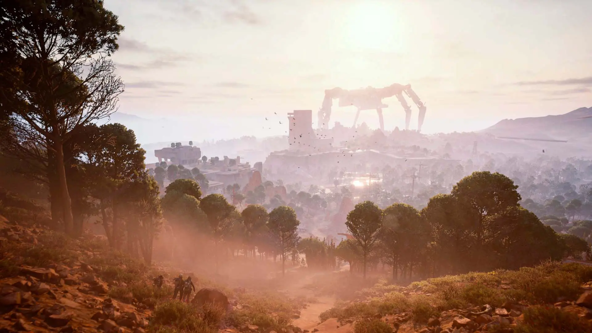

Природа постапокалиптического мира
29 января 2026
Это мёртвая красота после конца цивилизации. Земля не сгорела и не умерла полностью — она застыла, будто ждёт, кто победит: человек или машина. Леса проросли сквозь бетон и сталь, корни разрывают асфальт, мох покрывает руины городов. Трава колышется там, где раньше были дороги, а ветер гуляет по пустым кварталам, в которых больше нет голосов. Природа медленно и упрямо возвращает себе мир, не спрашивая разрешения. Но над этим спокойствием висит постоянная угроза. В небе — холодный механический гул, среди холмов и развалин — следы ARC. Животные редки, тишина давит, а каждый пейзаж одновременно красив и опасен. Это мир, где зелень и ржавчина сплелись воедино. Мир, который выглядит живым — но принадлежит не людям. Пока.